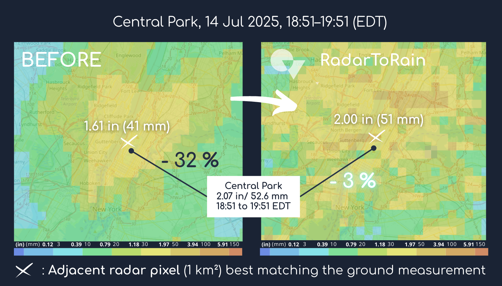
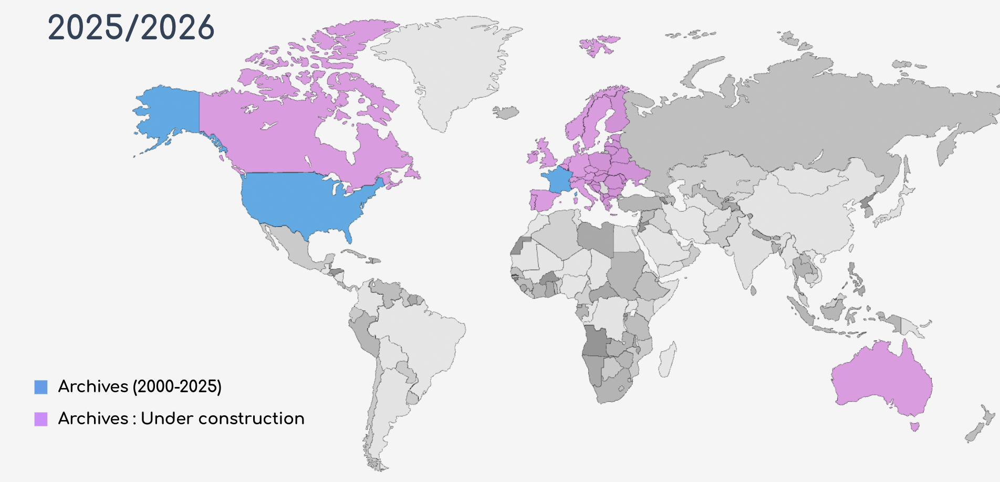

Better Ground Data.
Better Decisions.
Our expertise : Rain at ground level
Standard radar data meets the needs of most users. However, for those who require optimal ground-level accuracy, RadarToRain provides data that is consistent with rain gauge measurements. It combines scientific expertise and artificial intelligence. Our innovative, high-quality approach bridges the gap between radar-measured rain in the sky and the reality on the ground.
Illustration: July 14, 2025, New York City
New York City experienced near-record rainfall with the second highest hourly accumulation ever recorded by ground measurement. The closest cumulative value obtained from the conventional radar image (Marshall-Palmer) near this measuring station is 1.61'' / 41mm and the RadarToRain data reveals a more realistic value: 2.00'' / 51mm.

Ask for the full event report (free): The July 14-15, 2025 New York
Central Park, 14 Jul 2025, 18:51-19:51 (EDT)
Our products: From Rainfall Archives to Real-Time Vision
We focus on delivering archived rainfall data. Real-time images or forecasting services are part of our future roadmap.
Contact us to find out moreWhat we deliver:
- Cartesian image files compatible with the main modeling tools (GeoTiff, GeoJson, etc.)
- Custom area and period of your choice
- Resolution of 1 km²
- Based on open-data radar and weather datasets from public providers:
- US: NOAA, ASOS
- Europe: Meteo France, OPERA/EUMETNET
Coverage Map
Availability for 2025/2026:
United States (blue), Canada, Europe, and Australia (under construction - purple)

Your trust: Transparent quality validation
Validating our cumulative precipitation images is straightforward: we check for the existence of official ground measurements, nothing more, nothing less.
This approach is intended to be transparent and accessible to all.
Confidence/Quality Index
Before any RadarToRain data is billed or delivered, we provide a Confidence/Quality Index for the requested area and period.
- If it does not meet your requirements, you are free not to place an order
- The index reflects the quality of raw data and the consistency of our images with official measurements
Your new opportunities: precision that guides your decisions
Hydrology
Calibrate your models and analyze past floods with data that truly reflects rainfall on the ground.
Agriculture
Assess the real impact of rainfall events and optimize irrigation strategies with accurate historical data.
Risks / Urban Planning
Revisit extreme events and refine flood assessments with corrected radar archives.
Real time is on the way — our archives are its foundation.
Our team and vision: Science and AI in perfect synergy
RadarToRain is a pioneer in producing ground-level rainfall accumulation.
Our breakthrough technology was born from the fusion of more than 20 years of hydrological expertise with cutting-edge technology.
It is based on a proprietary process and years of research and innovation. It was presented at the World Meteorological Organization's Technical Conference (TECO 2024).
Collaborative approach:
Because rain gauges help anchor radar information to the surface but are limited in number and carry known uncertainties, we are open to and welcome any spatialized rainfall data you may wish to share.
This spirit truly inspires us and reflects our commitment to quality and transparency in data validation.
Get in Touch
Interested in our radar processing technology?
Ask for a demo, event reports, or discuss your specific needs
contact@radartorain.com